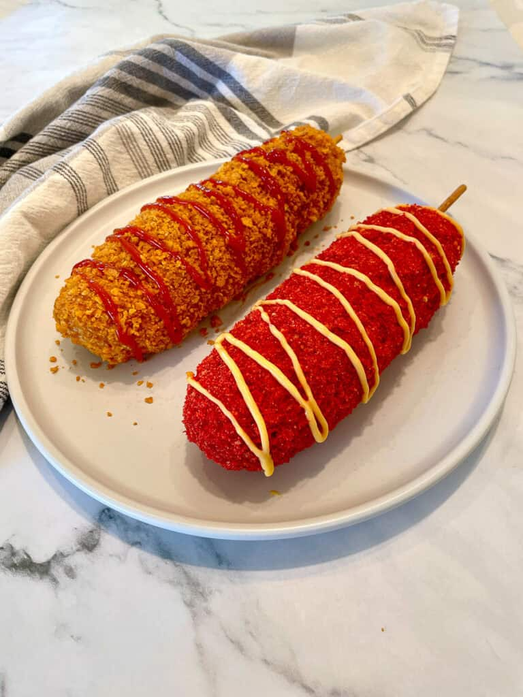

Corn Dog

Description
Korean Corn Dogs are usually filled with cheese or hot dogs, and coated with Panko. The dogs can be coated chips, potatoes or french fries or even ramen. Unlike their American counterparts, the Korean Corn Dog actually does not contain and corn meal in the batter. Cheese Korean Corn Dogs are instead made from yeasted dough instead of corn meal batter.
Ingredients
- Flour
- Warm Water
- Active Dry Yeast
- White Sugar
- Kosher Salt
- Panko
- Hot Dogs
- Cheese
- Nacho cheese
- Chips
Steps
- Combine the ingredients in a large dish and mix together:2 teaspoon Active Dry Yeast, 1 tablespoon White Sugar, 1 cup Warm Water
- After about 5-10 minutes once the mixture has started foaming add in: 1 ¾ cups Flour, ½ teaspoon Kosher Salt
- Cover and let the dough rise for at least 45 minutes to an hour.
- While the dough is rising, Cut the hot dogs in half and the cheese blocks to the same width and skewer onto a chopstick or skewer stick. Once all skewered place into the fridge until the dough is ready.
- Pour the Panko onto a baking tray or large plate.
- Hold your skewers at an angle to dip and twirl the batter onto the skewers. Ensure that the entire skewer is covered to prevent the cheese from leaking out.
- Roll the battered skewer into the Panko and use your hands to mold into shape and pack the Panko onto the skewer.
- Heat your oil to 350 and cook the corn dogs for 1.5 minutes on each side. I find the corn dogs retain the shape the best when cooked immediately after the dipping process.
- After the corn dog is cooked, set aside on a cooling rack and repeat until done.After the corn dog is cooked, set aside on a cooling rack and repeat until done.
- If you are adding chip coating , Use a brush or spoon to apply Nacho cheese or mayo to the corn dog
- Roll and press the chips onto the corn dogs.
- Sprinkle sugar if desired, and serve with ketchup, and mustard.
Home